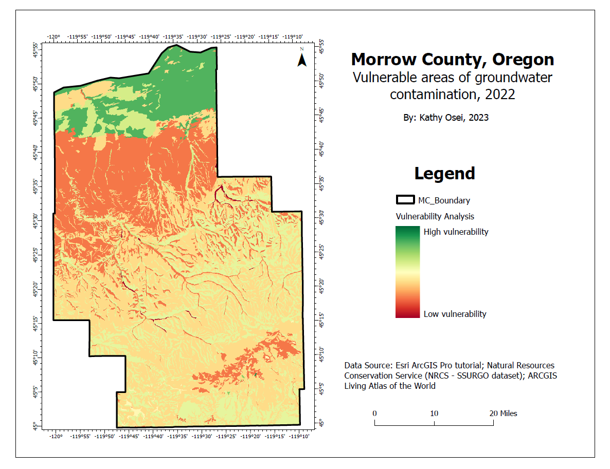
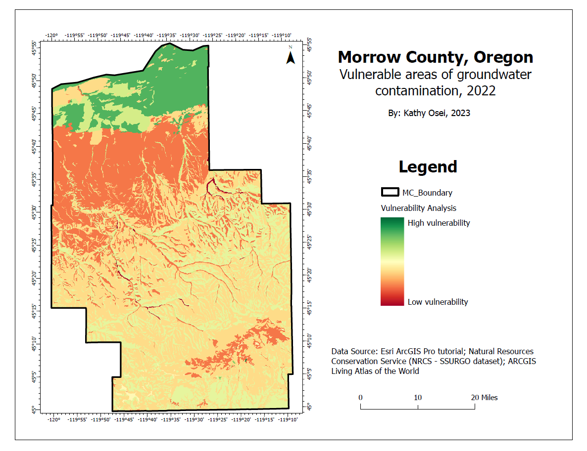
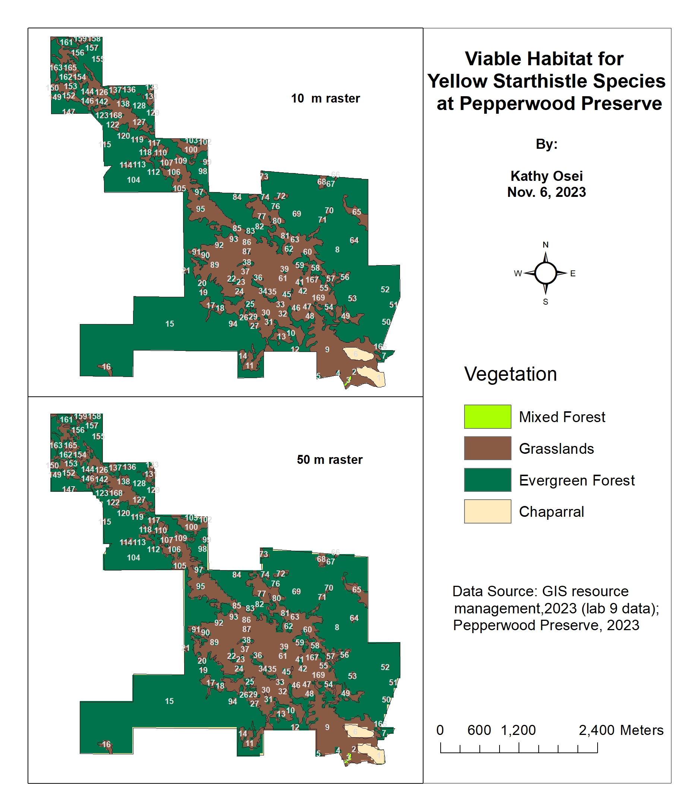
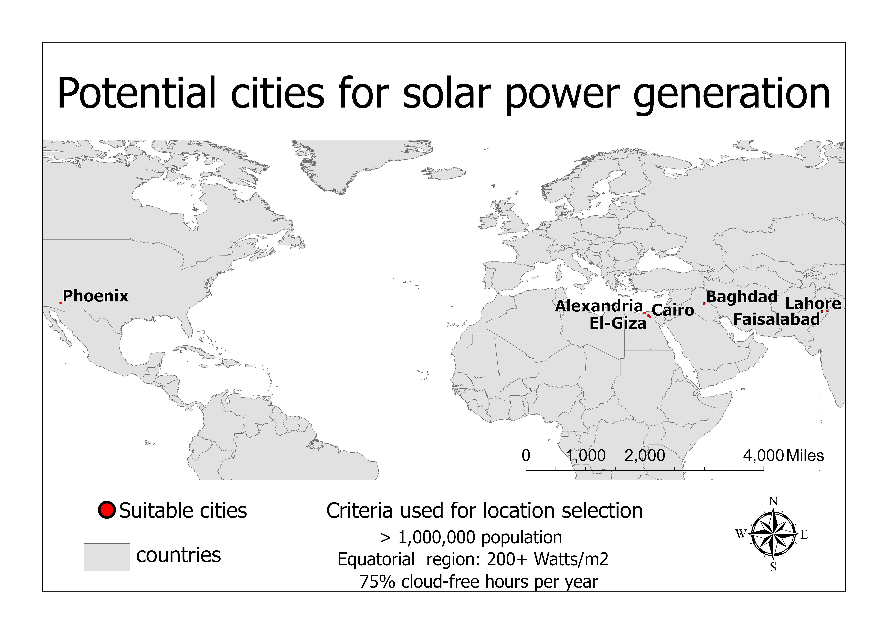
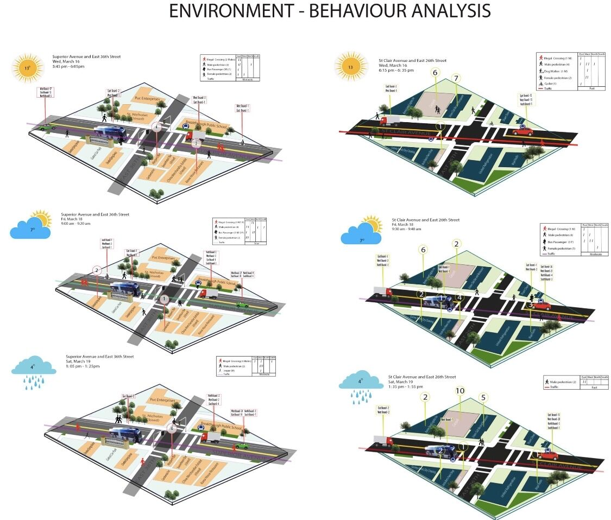

In this project, we use GIS and remote sensing to conduct a 20-year analysis of land cover/land use changes in Stillwater, Oklahoma, a town recognized as the 6th fastest-growing small city in the USA by Forbes Magazine. This project serves as a showcase of my proficiency in techniques such as image preprocessing, supervised classification algorithms, and accuracy assessment.
 

For this project, I use the suitability modeler tool in Arc GIS Pro to identify groundwater contamination risks in Morrow County, Oregon.

For this project, I used ArcMap tools such as raster calculator, intersect, select by attribute and location to identify viable habitats for Starthistle species at Pepperwood Preserve

In this project, I utilized ArcGIS Pro tools, including spatial analysis and geoprocessing functionalities, to identify prime cities worldwide for solar power generation. Employing criteria such as a population exceeding 1,000,000 and a minimum of 75% annual cloud-free hours, the analysis pinpointed optimal urban centers.

For this project, I utilized Adobe Photoshop, Illustrator, and InDesign to redesign sections of East Cleveland. Considering factors like physical characteristics, traffic flow, and population demographics, this exercise allowed me to envision urban spaces with a fresh perspective.

Venturing out to the site, my field study in East Cleveland involved keen observations and in-depth studies of social behaviors, providing invaluable insights into the social dynamics of urban life. This hands-on approach guided my design considerations, ensuring a nuanced understanding of the community for a more informed and thoughtful urban development.

Undertaking the challenge of addressing safety concerns for road users in East Cleveland, Ohio, this project focuses on a strategic redesign of a street section with a history of accidents. The redesigned street section incorporates traffic-calming measures, improved signage, and enhanced pedestrian infrastructure (highlighted in red).